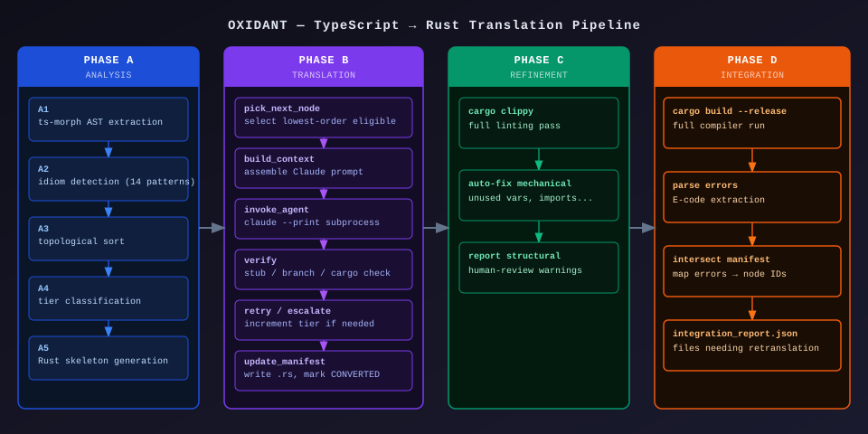
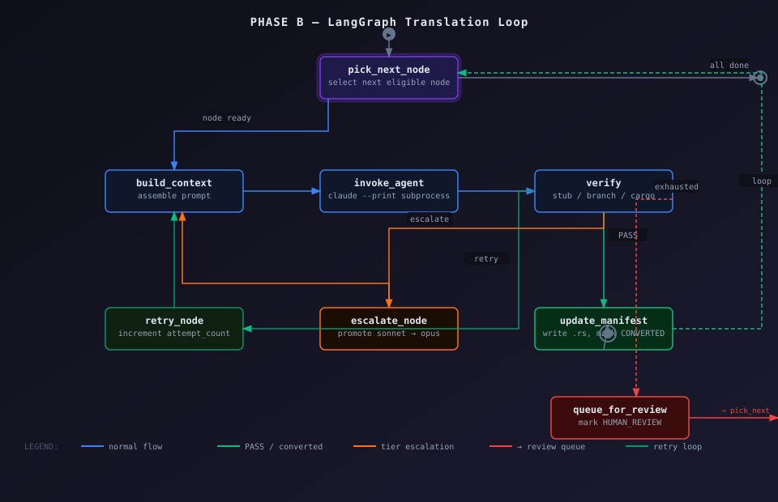
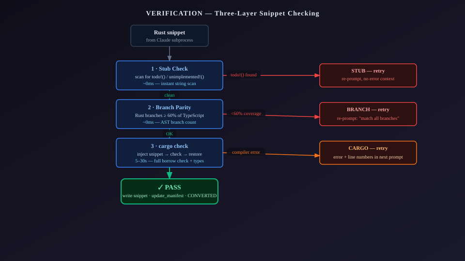

Why Oxidant exists
There is no mature tool for translating a TypeScript codebase to Rust. Naive file-by-file LLM prompting produces code that compiles in isolation but fails at integration — type boundaries collide, ownership is invented rather than derived, and algorithms get silently simplified.
Oxidant's approach is borrowed from the academic TS→Rust literature (ORBIT, ENCRUST, SACTOR): extract a complete dependency graph first, translate in topological order so every dependency is already converted when a node is processed, verify each snippet with the real Rust compiler before accepting it, and separate correctness from idiomaticity into distinct phases.
The first test corpus is msagl-js — Microsoft's Automatic Graph Layout library in TypeScript. Before Oxidant existed, this translation was done manually: 236 commits of painstaking hand-translation, acting as the agentic harness by hand. Oxidant automates that process.
The four-phase pipeline
The pipeline is sequential at the top level. Each phase produces artifacts consumed by the next. Phase B's internal loop is highly iterative — a single node may be attempted multiple times at escalating model tiers before being accepted or queued for human review.
Analysis & Preparation
ts-morph AST extraction → idiom detection → topological sort → Haiku tier classification → compilable Rust skeleton with todo!() stubs.
Translation Loop
LangGraph state graph processes nodes in topological order. Each node is translated by Claude Code, verified with cargo check, and retried at higher model tiers on failure.
Idiomatic Refinement
Runs cargo clippy --all-targets -W clippy::pedantic. Mechanical warnings are auto-fixed. Structural and human-judgment warnings are reported for review.
Integration & Verification
Full cargo build --release. Integration errors (type boundary mismatches between assembled modules) are isolated and flagged for re-translation.

The conversion manifest
conversion_manifest.json is the central artifact shared by all phases.
Every translatable unit in the source codebase — class, method, function, interface,
enum, type alias — becomes a node in the manifest with full metadata.
| Field | Type | Description |
|---|---|---|
| node_id | string | Unique key: module__file__ClassName__methodName |
| source_file | string | Relative TypeScript path, e.g. modules/drawing/src/color.ts |
| source_text | string | Full TypeScript source of this node (up to 2000 chars sent to Claude) |
| node_kind | enum | class | method | free_function | constructor | enum | interface | type_alias |
| type_dependencies | string[] | Node IDs this node references by type — forms the dependency graph |
| call_dependencies | string[] | Node IDs this node calls at runtime |
| topological_order | int | Processing priority — lower is processed first |
| cyclomatic_complexity | int | Number of independent paths through the code |
| idioms_needed | string[] | TS patterns requiring special Rust handling (see Idiom Detection) |
| tier | haiku | sonnet | opus | Which Claude model to use for translation |
| status | enum | not_started | in_progress | converted | human_review |
| snippet_path | string? | Path to the saved .rs snippet once converted |
| attempt_count | int | Number of translation attempts made |
| last_error | string? | Last cargo check error for debugging and retry context |
Phase A: Analysis pipeline
A1 — AST Extraction (ts-morph)
ts-morph was chosen over raw TypeScript compiler API or Babel specifically
for its cross-file type resolution. When a method in GeomGraph
accepts a parameter of type GeomNode from another module, ts-morph resolves
that type fully and records it as a dependency edge in the manifest. This is what makes
topological ordering accurate.
Every translatable unit is extracted with its full source text, parameter types, return
type, and both type-level and runtime call dependencies. The output is a single
conversion_manifest.json.
A2 — Idiom Detection (ts-morph)
A second ts-morph pass scans each node's AST for 14 patterns known to require
non-trivial Rust translation. Each detected idiom is stored in idioms_needed[]
on the node and used in Phase B to inject relevant translation guidance into the prompt.
A3 — Topological Sort
Nodes are sorted so that when a node is translated, every node it depends on has already been translated. The resulting Rust signatures of dependencies are available to the agent, eliminating guesswork about what the Rust API looks like. This is the single biggest driver of translation quality.
A4 — Tier Classification
Each node is assigned a translation tier — haiku, sonnet, or opus — based on cyclomatic complexity, idiom count, and node kind. Simpler nodes use cheaper, faster models. The tier is also the escalation path: if Haiku fails after 3 attempts, the node is re-tried at Sonnet, then Opus.
A5 — Rust Skeleton Generation
A Python script generates a complete, compilable Rust project. Every module exists.
Every struct has its fields. Every function has a todo!("OXIDANT: not yet translated — {node_id}")
body. The skeleton must pass cargo build before Phase B begins.
The count of remaining todo!() macros is the primary progress metric.
Class hierarchy handling
msagl-js has 101 classes that use extends, forming 22 distinct
parent-child hierarchies. The skeleton generator classifies each hierarchy before emitting
any Rust, because the correct Rust representation depends on why the hierarchy
exists — not just that it exists.
Classification is hardcoded in KNOWN_HIERARCHIES inside analysis/hierarchy.py,
validated against a manual Rust port of msagl-js at Routers/msagl-rust.
It is not a heuristic — every hierarchy was checked by hand.
Category A — Discriminated unions → pub enum
These hierarchies have subclasses that add 0–3 unique fields each. TypeScript code
dispatches on them using instanceof checks. In Rust, these must
be enums — a flat struct has no runtime discriminant to match on.
Classified as enum:
SweepEvent, VertexEvent, BasicVertexEvent,
BasicReflectionEvent, Layer, OptimalPacking
The skeleton emits a single pub enum in the base class's .rs file.
Each child class's fields become named fields of a variant. Child class .rs
files emit no struct — they are folded into the parent enum.
TypeScript (11 separate classes)
class SweepEvent { }
class AxisCoordinateEvent extends SweepEvent {
site: Point;
}
class ConeClosureEvent extends SweepEvent {
coneToCLose: Cone;
site: Point;
}
class VertexEvent extends SweepEvent { }
class OpenVertexEvent extends VertexEvent {
vertex: PolylinePoint;
}Rust skeleton (one enum)
pub enum SweepEvent {
AxisCoordinateEvent {
site: Rc<RefCell<crate::point::Point>>,
},
ConeClosureEvent {
cone_to_close: Rc<RefCell<crate::cone::Cone>>,
site: Rc<RefCell<crate::point::Point>>,
},
VertexEvent(crate::vertex_event::VertexEvent),
// ...
}
Sub-hierarchies that are themselves enum bases (e.g. VertexEvent is a child of
SweepEvent but also has its own children) are emitted as their own
pub enum in their module and referenced as a tuple variant from the parent enum.
When method signatures in other modules reference a now-folded child type (e.g.
PortObstacleEvent), a type redirect table
(_enum_child_redirect) maps that name to the parent enum type
(crate::sweep_event::SweepEvent) so cross-module method signatures
still compile.
Category B — Behavior hierarchies → struct composition
These hierarchies have subclasses that are large independent classes sharing a base.
Each subclass gets its own pub struct with pub base: ParentType
as the first field. When agents convert methods that call super.method(),
they write self.base.method().
Classified as struct:
Algorithm (24 subclasses), Attribute (4),
SegmentBase, LineSweeperBase, GeomObject,
BasicGraphOnEdges, Entity, Port,
DrawingObject, SvgViewerObject, ObstacleSide,
BasicObstacleSide, ConeSide, VisibilityEdge,
KdNode, Packing
TypeScript
class SplineRouter extends Algorithm {
continueOnOverlaps: boolean;
obstacleCalculator: ShapeObstacleCalculator;
run() {
super.run();
// ...
}
}Rust skeleton
pub struct SplineRouter {
// base field always first, cross-module path
pub base: crate::algorithm::Algorithm,
pub continue_on_overlaps: bool,
pub obstacle_calculator: Rc<RefCell<
crate::shape_obstacle_calculator
::ShapeObstacleCalculator>>,
}
// agent writes: self.base.run();External parents
If a class extends a type that is not in the manifest corpus (e.g. browser built-ins
like EventSource), the skeleton emits a comment rather than a field:
pub struct MyClass {
// NOTE: extends EventSource (external — not in corpus)
pub some_field: String,
}Why this matters: agents have no memory between invocations. Without a hierarchy-aware skeleton, every agent in a family like SweepEvent independently invents its own representation — producing inconsistent, incompatible Rust. The scaffold locks in the right structure before any agent touches the code.
Idiom detection & translation guidance
TypeScript has patterns with no direct Rust equivalent. Oxidant detects these statically in Phase A and injects targeted translation guidance into Phase B prompts. Each node only receives guidance for the idioms present in its own source — no noise, no irrelevant context.
Idiom guidance lives in idiom_dictionary.md — a versioned markdown file with
one section per idiom. Sections are keyed to idiom names so context.py can
look them up at translation time. Adding a new idiom pattern means adding one entry to
detect_idioms.ts and one section to the dictionary.
Example: null_undefined → Option<T>
// TypeScript
const node = graph.findNode(id);
if (node == null) return null;
return node.label ?? "untitled";// Rust (translated output)
let node = graph.borrow().find_node(id);
if node.is_none() { return None; }
let node = node.unwrap();
return Some(node.borrow().label
.clone()
.unwrap_or_else(|| "untitled".to_string()));Example: mutable_shared_state → Rc<RefCell<T>>
// TypeScript
class GeomGraph {
boundingBox: Rectangle;
constructor(graph: Graph) {
this.boundingBox = new Rectangle();
}
}// Rust (skeleton pattern)
pub struct GeomGraph {
pub bounding_box: Rectangle,
base: GeomNode,
}
// Shared ref: Rc<RefCell<GeomGraph>>
// Mutation: node.borrow_mut().bounding_box = r;Phase B: The translation loop
Phase B is a LangGraph StateGraph that iterates over the manifest
in topological order. Each iteration picks one node, builds a context-rich prompt, calls
Claude Code as a subprocess, verifies the output, and either accepts it or retries.

Prompt construction
Every prompt is assembled fresh for each attempt by context.py:
- The full TypeScript source text of the node
- The Rust function signature from the skeleton (not invented — read from disk)
- Rust snippets of already-converted dependencies (the actual translated code they call into)
- Relevant idiom translation guidance from
idiom_dictionary.md - On retries: the exact
cargo checkerror with line numbers
Subscription auth — no API key
Phase B calls claude --print --output-format json <prompt> as a subprocess,
intentionally stripping ANTHROPIC_API_KEY from the environment before invoking.
This forces Claude Code to use the user's Max subscription rather than billing to the API account.
The model used is determined by the node's tier, not overridden at the subprocess call.
Tier escalation
Each node starts at its assigned tier (haiku / sonnet / opus). If the snippet fails
verification and retries are exhausted, the node is re-tried at the next tier.
A sonnet-tier node that fails 4 attempts is escalated to opus for 5 more attempts.
If opus is exhausted, the node goes to review_queue.json.
Verification: three layers
Every translated snippet passes three checks before being accepted, ordered cheapest-first.
The first failure short-circuits — no point running cargo check if the
snippet still contains todo!().

Why cargo check instead of a Rust AST?
The TypeScript side uses ts-morph (full compiler-backed AST). The Rust side uses
the compiler directly — no Rust AST library like syn.
This is intentional: cargo check performs full type checking including
borrow checker analysis, and the skeleton means every other unconverted function is
still present as a todo!() stub. The new snippet is type-checked against
the real skeleton API, not a mock. Errors include exact line numbers and types —
far more useful than anything a static AST check could produce.
The inject-and-restore pattern
For each cargo check verification, the snippet is injected into the
skeleton at the exact todo!() marker for that node, cargo check
runs on the whole project, then the original todo!() is restored — even if
the check fails. The skeleton is always left in a compilable state after verification.
CLI reference
# Full Phase A (extract AST, detect idioms, sort, classify, generate skeleton)
oxidant phase-a
# Phase A without API tier classification (uses heuristic rules instead)
oxidant phase-a --heuristic-tiers
# Reclassify tiers on an existing manifest (no re-running Phase A)
oxidant classify-tiers --heuristic
# Phase B — translate all nodes
oxidant phase-b
# Phase B smoke test — stop after N nodes
oxidant phase-b --max-nodes 5
# Phase B dry run — print the first node's prompt, no API calls
oxidant phase-b --dry-run
# Phase C — Clippy refinement pass
oxidant phase-c
# Phase D — full build + integration error isolation
oxidant phase-d
oxidant phase-d --manifest conversion_manifest.json